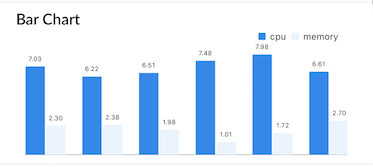
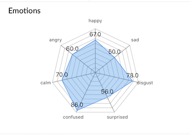
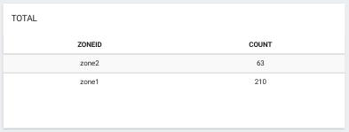
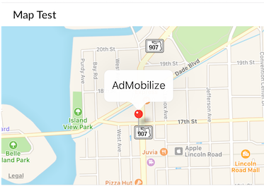
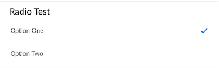
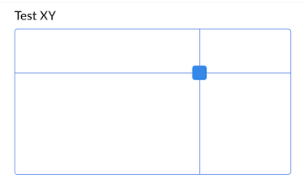
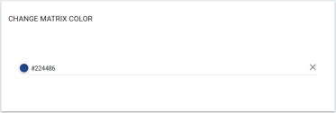

Widgets
You should have familiarity with Data Types, Cross Talk and Dashboard before exploring further.
Widgets are what allow you to visualize and or control your MATRIX applications through the MATRIX Dashboard.
Widget Configuration
Each widget requires certain options to be defined before they can properly show on the dashboard. The list below will go through each available option for widgets.
Widget Types
- Display Widgets - Displays data from an application.
- Control Widgets - Sends real-time events to an application.
All Widget Options
label- Optional display title for widget.size- Optional percentage value for a widget's width (25, 50, 75, etc..).
widgetscan only have either adisplayorcontroloption when choosing a widget type.
Display Widget Options
Display widgets, like tables, charts and value outputs are only concerned with what data to display and how to display it.
display - Which display widget to load
type- Select type from a defined data type (see Sending Data ).key/keys- Select key or keys being used fromtype.format- Filter the data. choose fromcount,sum,avg,percent,max,min,fixed,round.realtime- Defaults to true. Use therefreshoption for manual updates.refresh- How many seconds between data refresh. use withrealtimeset to false.
Interactive Widget Options
Interactive widgets, like buttons, switches, and controllers are meant to send data from the MATRIX Dashboard to your MATRIX app.
control - Which control widget option load
trigger- The event to listen for in your application ( see Reference > Crosstalk)value- On button widgets, what text should be in the buttonmap- On button widgets, a collection ofvalue: triggerwhere value is the button text, and trigger is the event fired
Display widgets
Indicated via a display option.
Each example will show how to configure their respective widget. screens and dataTypes will be left up to you to configure.
bar - bar chart
#config.yaml
widgets:
barChartTest:
display: bar
type: monitor
keys: cpu, memory
format: avg
realtime: false
refresh: 60
label: Bar Chart
//send data through app.js
matrix.type('monitor').send({
'cpu': 7.03,
'memory': 2.30
});
digit - numerical
#config.yaml
widgets:
digitTest:
display: digit
type: monitor
key: cpu
format: round
label: cpu
//send data through app.js
matrix.type('monitor').send({
'cpu': 2.4,
'memory': 5.4
});
radar - radar chart
#config.yaml
widgets:
radarTest:
display: radar
type: emotions
keys: happy,sad,disgust,surprised,confused,calm,angry
label: Emotions
//send data through app.js
matrix.type('emotions').send({
'happy': 67,
'sad': 50,
'disgust': 78,
'surprised': 56,
'confused': 86,
'calm': 70,
'angry': 60
});
line - line chart
#config.yaml
widgets:
lineChartTest:
display: line
type: monitor
format: avg
keys: cpu, memory
realtime: true
label: Line Chart
//send data through app.js
matrix.type('monitor').send({
'cpu': 7.03,
'memory': 2.30
});
list - data table
#config.yaml
widgets:
listTest:
display: list
type: device
keys: Hostname,Type,Platform,Arch
label: Secret Information
//send data through app.js
matrix.type('device').send({
'Hostname': 'h7n.domain',
'Type': 'Darwin',
'Platform': 'darwin',
'Arch': 'x64'
});
Simple Group
list-group - grouped data table
#config.yaml
widgets:
info:
display: list-group
type: vehicleDetection
keys: count
format: count
label: Total
//send data through app.js
matrix.type('vehicleDetection').send({
'zoneId': 'zone1',
'count': '4',
'speed': '56'
});
Group By Key 
#config.yaml
widgets:
info:
display: list-group
type: device
keys: zone, count
format: count
groupby: zone
label: Total
//send data through app.js
matrix.type('vehicleDetection').send({
'zoneId': 'zone1',
'count': '4',
'speed': '56'
});
pie-chart - pie chart
#config.yaml
widgets:
pieChartTest:
display: pie-chart
type: gender
keys: women,men
label: Gender
//send data through app.js
matrix.type('gender').send({
'women': 76,
'men': 45
});
polar - polar area chart
#config.yaml
widgets:
polarTest:
display: polar
type: emotions
keys: happy,sad,disgust,surprised,confused,calm,angry
label: Emotions
//send data through app.js
matrix.type('emotions').send({
'happy': 67,
'sad': 50,
'disgust': 78,
'surprised': 56,
'confused': 86,
'calm': 70,
'angry': 60
});
label - string display
#config.yaml
widgets:
labelTest:
display: label
type: uv
key: risk
label: UV Risk
//send data through app.js
matrix.type('uv').send({
'value': 0.56773,
'risk': 'Low'
});
gauge - gauge 
#config.yaml
widgets:
gaugeTest:
display: gauge
type: detection
keys: views
min: 0
max: 100
label: 'Views'
//send data through app.js
matrix.type('detection').send({
'views': 60,
'impressions': 100
});
indicator - light indicator on/off
#config.yaml
widgets:
indicatorTest:
display: indicator
type: system
keys: isOn
label: 'Indicator Test'
//send data through app.js
matrix.type('system').send({
'isOn': true
});
map - google maps
widgets:
mapTest:
display: map
type: location
label: 'Map Test'
//send data through app.js
matrix.type('location').send({
'latitude': 25.791632,
'longitude': -80.1414447,
'label': 'Admobilize'
});
link - link to a destination (URL)
widgets:
link:
display: link
label: "Link display"
title: "Google"
url: "https://www.google.com"
Control Widgets
Indicated via a control option.
Each example will show how to configure their respective widget. screens and dataTypes will be left up to you to configure.
input - input field, single or multiple
Single Inputs

#config.yaml
widgets:
inputTest:
control: input
event: testInput
value: 'type text'
label: 'Test Input'
//Cross-Talk event from dashboard
matrix.on('testInput', function(p){
var text = p.value;
})
Multiple Inputs

#config.yaml
inputMapTest:
control: input
map:
- event: testInput1
value: first type text
- event: testInput2
value: second type text
label: Test Input Map
//Cross-Talk event from dashboard
matrix.on('testInput1', function(p){
var text = p.value;
})
matrix.on('testInput2', function(p){
var text = p.value;
})
button - button, single or multiple
Single Buttons

#config.yaml
widgets:
buttonTest:
control: button
event: buttonInfo
value: Get Secret Information
label: Hacking Buttons
//Cross-Talk event from dashboard
matrix.on('buttonInfo', function(){
// ...
});
Multiple Buttons

#config.yaml
widgets:
buttonMapTest:
control: button
map:
- event: buttonUp
value: amps+
- event: buttonDown
value: amps-
- event: buttonStart
value: begin
- event: buttonStop
value: end
- event: buttonCapture
value: capture
- event: buttonSlow
value: refresh+
- event: buttonFast
value: refresh-
label: Matrix Activation Buttons
//Cross-Talk event from dashboard
matrix.on('buttonUp', function(){
// ...
})
matrix.on('buttonDown', function(){
// ...
})
matrix.on('buttonStart', function(){
// ...
})
matrix.on('buttonStop', function(){
// ...
})
matrix.on('buttonCapture', function(){
// ...
})
matrix.on('buttonSlow', function(){
// ...
})
matrix.on('buttonFast', function(){
// ...
})
switch - switch, single or multiple
Single Switch

#config.yaml
widgets:
switchTest:
control: switch
event: ledEnabledChanged
value: Leds enabled
label: Switch Test
//Cross-Talk event from dashboard
matrix.on('ledEnabledChanged', function(p){
var isOn = p.value;
})
Multiple Switches

#config.yaml
widgets:
switchMapTest:
control: switch
map:
- event: ledEnabledChanged
value: Leds enabled
- event: detectionEnabledChanged
value: Detection Enabled
label: Switch Map Test
//Cross-Talk event from dashboard
matrix.on('ledEnabledChanged', function(p){
var isOn = p.value;
});
matrix.on('detectionEnabledChanged', function(p){
var isOn = p.value;
});
radio - radio, single or multiple
#config.yaml
widgets:
radioTest:
control: radio
map:
- event: optionOneSelected
value: Option One
- event: optionTwoSelected
value: Option Two
label: Radio Test
//Cross-Talk event from dashboard
matrix.on('optionOneSelected', function(p){
// ...
})
matrix.on('optionTwoSelected', function(p){
// ...
})
dropdown - dropdown menu
#config.yaml
widgets:
dropDownTest:
control: dropdown
map:
- event: optionOneSelected
value: Option One
- event: optionTwoSelected
value: Option Two
label: Dropdown Test
//Cross-Talk event from dashboard
matrix.on('optionOneSelected', function(){
//...
})
matrix.on('optionTwoSelected', function(){
//...
})
range - range slider
#config.yaml
widgets:
rangeTest:
control: range
event: rangeChanged
min: 0
max: 35
label: Range Test
//Cross-Talk event from dashboard
matrix.on('rangeChanged', function(p){
var value = p.value;
});
xy - track pad
#config.yaml
widgets:
xyTest:
control: xy
event: xyChanging
value: 'xy'
xMax: 100
yMax: 50
label: Test XY
//Cross-Talk event from dashboard
matrix.on('xyChanging', function(p){
var x = p.value.x;
var y = p.value.y;
});
radial - joystick, single or multiple
Single Radial

#config.yaml
widgets:
radial:
control: radial
event: radialChanging
label: Radial Test
//Cross-Talk event from dashboard
matrix.on('radialChanging', function(p){
var x = p.value.x; //from -1 to 1
var y = p.value.y; //from -1 to 1
})
Multiple Radials

#config.yam
widgets:
radialMap:
control: radial
map:
- event: radialRChanging
value: right
- event: radialLChanging
value: left
label: Radial Map Test
//Cross-Talk event from dashboard
matrix.on('radialRChanging', function(p){
var x = p.value.x; //from -1 to 1
var y = p.value.y; //from -1 to 1
});
matrix.on('radialLChanging', function(p){
var x = p.value.x; //from -1 to 1
var y = p.value.y; //from -1 to 1
});
 color - color picker
#config.yaml
widgets:
color:
control: color
event: colorChange
value: 'color'
label: 'Change MATRIX color'
//Cross-Talk event from dashboard
matrix.on('colorChange', function(color){
color = color.value;
matrix.led(color).render();
});